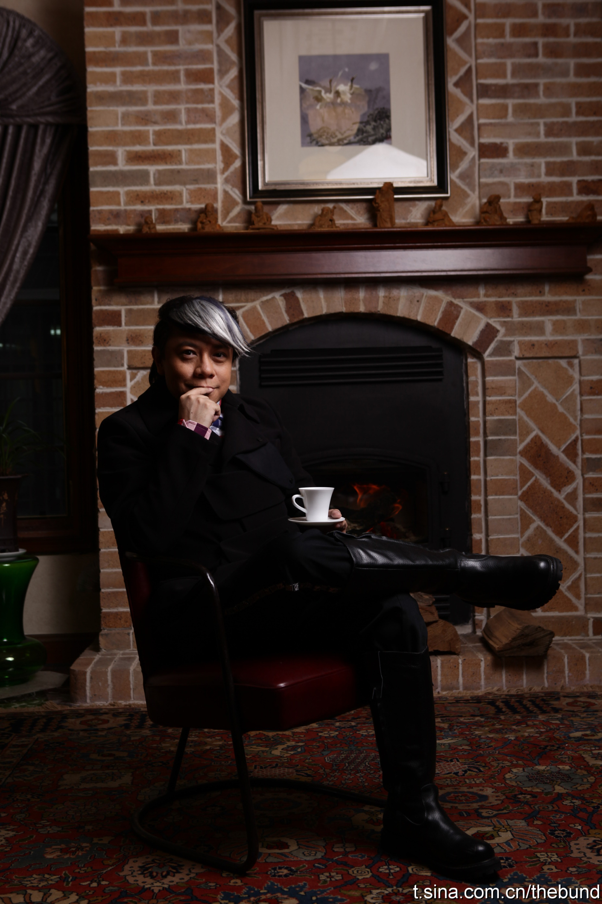

富裕环境中长大的孩子，通常对物质没那么追求，而且对待别人也更容易慷慨，仁慈和宽容。能够付出的人，通常之前有过收获别人关爱的经历。而从困苦环境中长大的人，这样的机会少。 //@刘松--甲骨文:富家子弟的好处，在蔡康永身上体现，很多人对变化的抱怨，来自于童年的困苦
@外滩传媒:
新书《蔡康永的说话之道》掀起的热潮还未降温，首次跨界时尚设计又将“蔡康永”变成一个新名词。纵然时尚不离左右，蔡康永的消费却理性而压抑；一个博览群书的人，对纸书未来的消逝全无哀叹；热衷现代科技的传播使用，又自称对破旧的东西特有感觉——外滩画报419期专访蔡康永“假装这一年没有过去”
- 